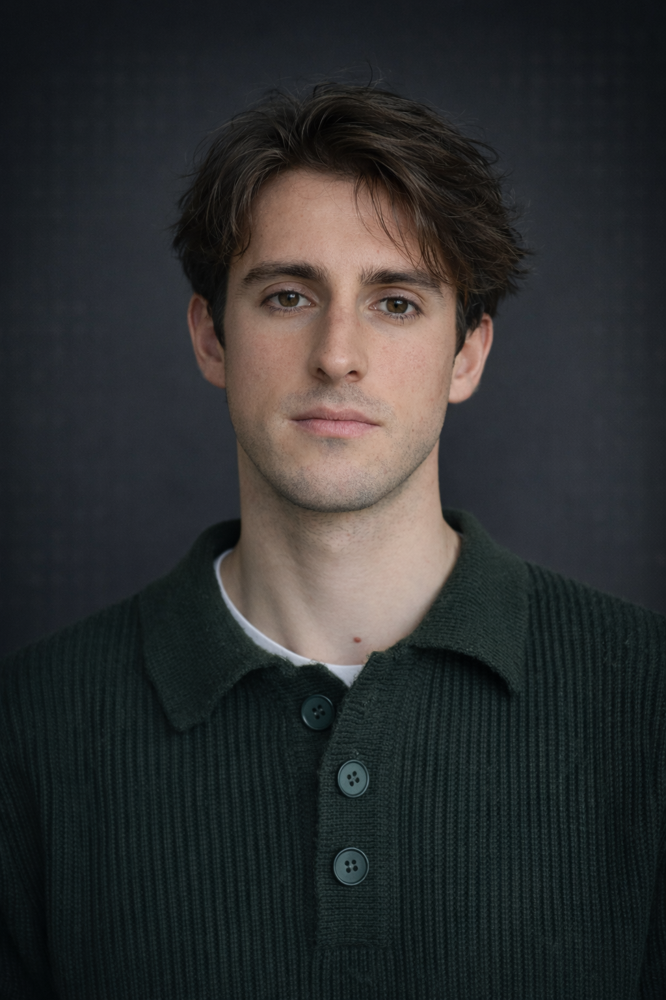

Emanuele Rimoldi
AI Researcher · MSc Neuro-AI, EPFL
Working at the intersection of machine learning and neuroscience, with a focus on self-supervised learning for physiological signals and biologically informed representations.

About
MSc Neuro-AI student at EPFL (minor: Data Science). Background in Engineering Physics (Politecnico di Milano) and a brief prior MSc in Nuclear Engineering. Research intern at Logitech CTO Research Office and Idiap Research Institute. Interested in problems where biological constraints genuinely shape model design.
Research Interests
- Self-supervised & foundation models for physiological signals (EEG, fMRI, EMG)
- Geometry-aware and conductivity-aware priors for neural recordings
- Robustness to electrode permutation, dropout, and montage variation
- Biologically plausible learning — spiking neural networks, AdLIF architectures
- Representation learning and latent structure in neural data
- Interpretability and fairness in applied machine learning
Publications
Work in progress — papers and preprints will appear here.
Experience
Spatially invariant foundation models for EEG; contrastive, masked, and autoencoding pipelines with geometry-aware and conductivity-aware priors.
Bio-inspired TTS: replaced FastSpeech 2 decoder with AdLIF spiking modules; studied biological plausibility and SNN dimensionality in speech synthesis.
Thermo-tactile sensory integration for noninvasive neuroprosthetic feedback; psychophysical study design and statistical modeling.
MRI/eye-tracking fatigue assessment (N-back); R pipeline for saccade, pupil, and gaze signal processing and time-series feature extraction.
Education
Minor in Data Science.
Transferred to Neuro-AI.
Applied Physics track.
Selected Projects
Spatially invariant SSL for EEG with contrastive, masked, and autoencoding objectives and geometry-aware priors for electrode-configuration robustness.
FastSpeech 2 with an AdLIF-based spiking decoder; investigation of biological plausibility and SNN dimensionality in speech generation.
GLM, PCA, ICA, and clustering of fMRI responses to emotional auditory stimuli.
Parameter-efficient fine-tuning of small LMs with explainability analysis across adaptation strategies.
Full alignment pipeline: SFT, DPO, retrieval-augmented generation, and quantization for an educational assistant.
Skills
- ML / DL
- PyTorch · TensorFlow · Hugging Face · scikit-learn
- Languages
- Python · MATLAB · R · C/C++
- Tools
- Git · LaTeX · Jupyter · HTML/CSS
- Domains
- EEG · fMRI · EMG · Signal processing · Psychophysics